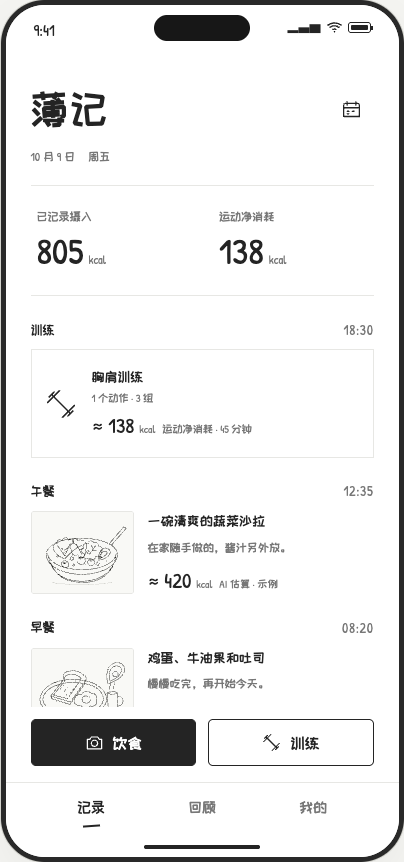
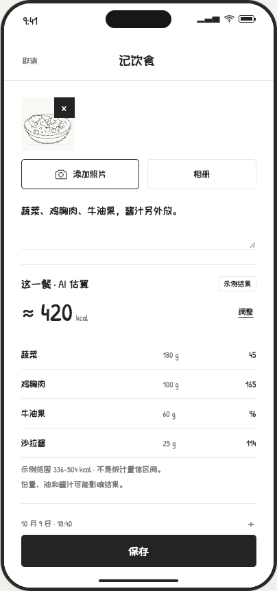
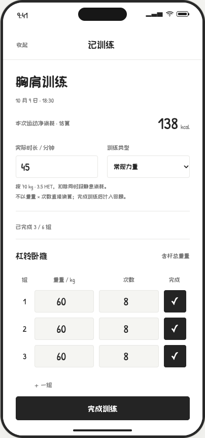
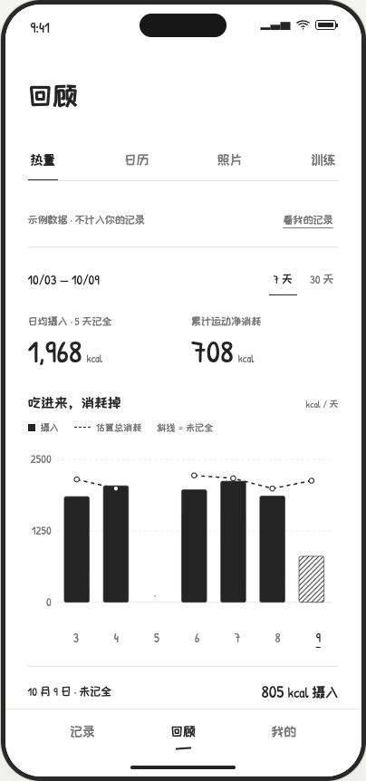
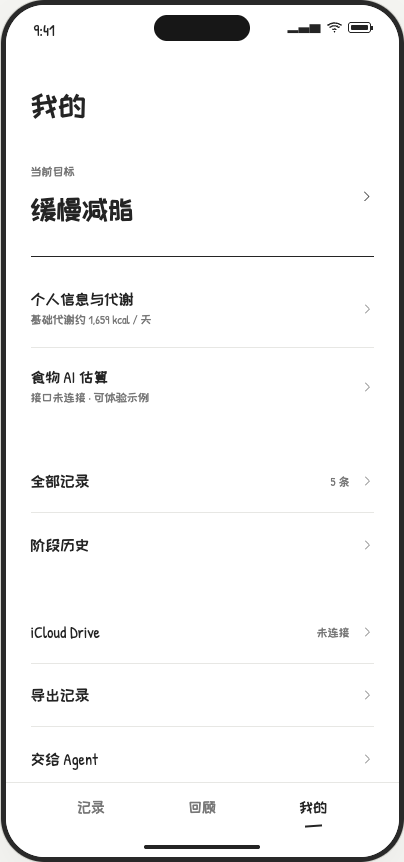
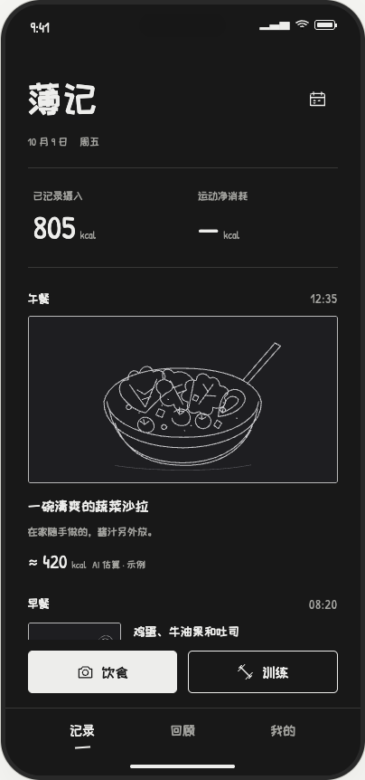

对应「薄肌」，也意味着更轻、更容易坚持的记录。
UI / UX v0.4 · 黑白简笔画按用户指定方向，简化结构、收敛文字、移除彩色装饰，产品更名为「薄记」。继续使用 ui-design 的 distill、polish 与 iOS 检查规范。保留记录能力与必要反馈，把低频信息延后呈现。
| 页面 | 精简内容 | 保留的主任务 |
|---|---|---|
| 记录 | 去掉英文副标题、周历条、数量汇总、目标徽标、卡片标签、分类装饰图标 | 日期、饮食与训练时间线、饮食 / 训练两个入口 |
| 记饮食 | 去掉介绍文字、重复字段说明；时间、餐次、标签收进展开项 | 拍照 / 相册、备注、保存 |
| 记训练 | 去掉草稿徽标、重复的参考提示、装饰进度条、每个动作的说明段落 | 重量、次数、完成框、加组、结束训练 |
| 回顾 | 去掉大数字统计卡和重复导出入口 | 日历 / 照片 / 训练、当天明细 |
| 我的 | 去掉大色块、营销文案、重复图标、次级说明 | 当前目标、历史、存储、导出、Agent |
| 底部导航 | 去掉图标与文字重复表达 | 记录 / 回顾 / 我的；当前页用细线标识 |
界面以黑、白和中性灰为主，取消森林绿与陶土色。品牌、标题与操作文字使用站酷快乐体，小字与正文也延续卡通手写风格，英文与数字使用 Patrick Hand。细线分隔、微小圆角、手画日期圈替代大面积色块与圆角容器。
| 要素 | 规则 |
|---|---|
| 颜色 | 白 #FFFFFF；墨黑 #242424；次要文字 #777777；分隔 #E7E7E4；轻底 #F7F7F5 |
| 字体 | 品牌 40px 站酷快乐体；页面标题 30px；按钮 16px；正文与输入 13–16px；次要信息 12px。原生实现按 Dynamic Type 适配。 |
| 线条 | 内容分隔 1px；主要按钮描边 1px；图标约 1.4px。小字适当放大并增加行高，保持手写风格下的可读性。 |
| 圆角 | 图片 3px；输入 / 按钮 4–5px；独立任务 Sheet 保留系统式上边圆角。 |
| 间距 | 393px 画布边距 25px；内容组间隔 23px；核心操作高度 44–47px。 |
| 示例插画 | 此轮新绘制餐碗、早餐与轻线条餐具 SVG。仅是设计示例，不做自动图片转换。 |
| 真实照片 | 用户上传的图片正常显示原色与细节，不自动灰度化，也不会转成插画。 |
| 深色 | 底色 #181818，文字 #EDEDEB；示例线稿反相。真实照片不反相。 |
照片和文字至少有一项即可保存；仍支持多图、实际时间修改、追加说明。错误仅在触发时显示。纯文字记录避免同一句内容在标题和备注中重复出现。
未完成组显示空框，确认后显示黑底勾选。复制内容始终待确认，批量补记明确生成实际完成组。收起保留草稿，结束时仅保存确认完成的组。
训练原型当前覆盖普通负重、自重次数、复制训练、批量录入和草稿恢复；辅助重量、热身组、计时 / 有氧专用表单仍待后续展开，原 PRD 中的范围不因此改变。
记录数据存储键沿用上一版以保留既有数据；应用名称、界面与导出文件名更新为「薄记」。示例时间固定在 2026 年 10 月，可在记录表单中修改。选择导出数据时，示例插画和用户图片均随记录导出。






站酷快乐体（ZCOOL KuaiLe）字体文件随原型本地加载，不依赖在线字体服务。来源：Google Fonts 官方字体仓库；随包保留 SIL Open Font License 1.1。训练数字、日期与英文使用 Patrick Hand 手写体，训练输入放大到 22px，日历数字为 18px。Patrick Hand 来源于 Google Fonts 官方字体仓库，许可随包保留于 assets/OFL-Patrick-Hand.txt。
主要录入流程、训练完成统计、草稿恢复、搜索、目标历史、图片导出进行浏览器回归测试，并检查桌面、393px 与 320px 窄屏、浅色与深色状态。iOS 系统手势、真实键盘避让、VoiceOver 与 Dynamic Type 仍需原生真机验证。
所有新简笔画和图标均为本项目编写的 SVG；未引用 UIZZE 图库。原目录中的两张 Unsplash 图片仅保留作已有上传测试素材，默认界面已使用新线稿。